CS180: Intro to Computer Vision and Computational Photography
I experimented with three different prompts at varying inference steps (10, 20, and 50) to observe the quality-speed tradeoff in DeepFloyd's two-stage diffusion model.
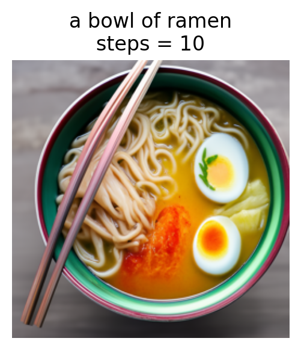
10 Inference Steps
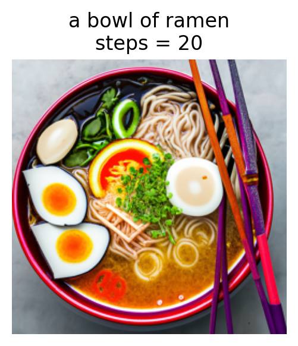
20 Inference Steps
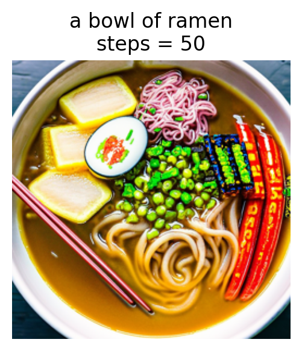
50 Inference Steps
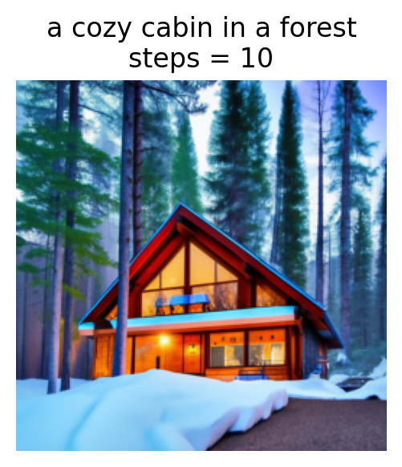
10 Inference Steps
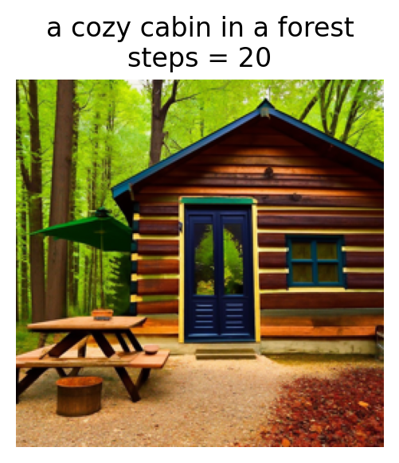
20 Inference Steps
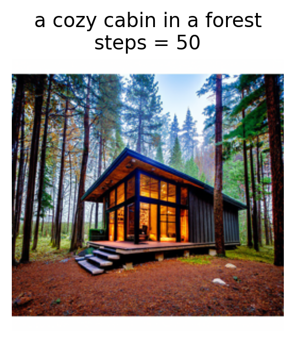
50 Inference Steps
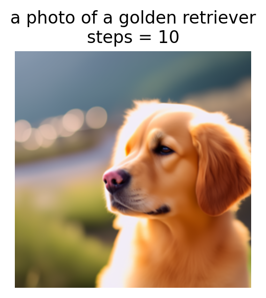
10 Inference Steps
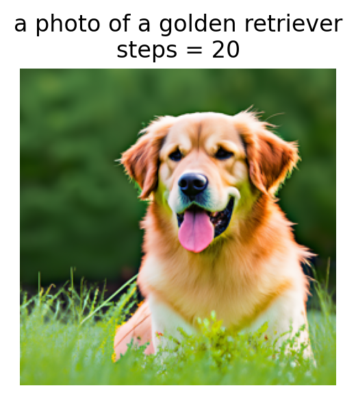
20 Inference Steps
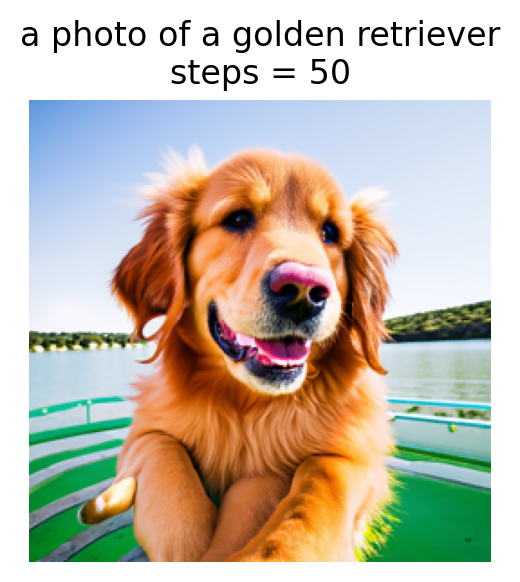
50 Inference Steps
The forward process is a key component of diffusion models. Given a clean image x₀, we add Gaussian noise to obtain progressively noisier versions x_t. The amount of noise is controlled by the timestep t and noise schedule parameters α̅_t (alphas_cumprod).
Forward Process: x_t = √(α̅_t) · x₀ + √(1 - α̅_t) · ε, where ε ~ N(0, I)
I implemented the forward(im, t) function and applied it to the Campanile test image at
timesteps t = [250, 500, 750]. As t increases, more noise is added, eventually obscuring the original image.
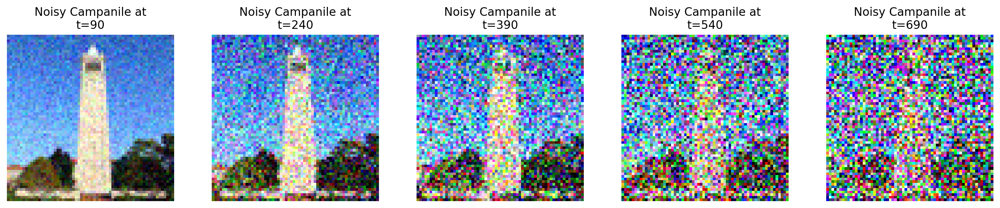
Before using neural networks, I attempted to denoise the noisy images using classical Gaussian blur filtering. This approach treats noise as high-frequency content and attempts to remove it via low-pass filtering. However, this also removes important high-frequency details from the image.
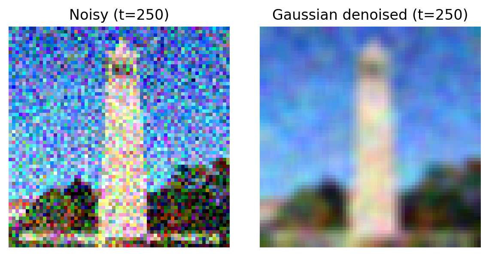
Gaussian Blur at t=250
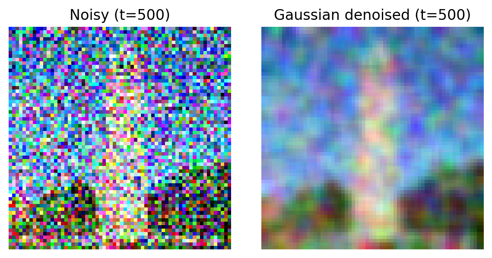
Gaussian Blur at t=500
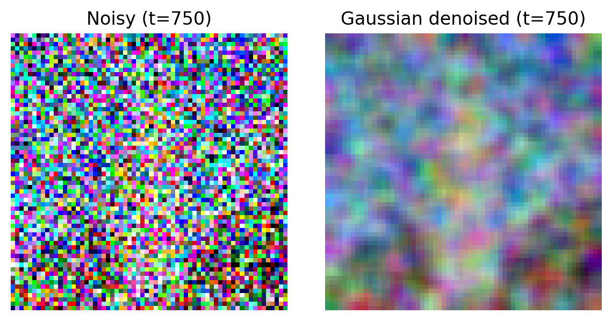
Gaussian Blur at t=750
Now I use the pretrained DeepFloyd UNet to estimate the noise in each image. The UNet takes the noisy image and timestep as input and predicts the noise ε that was added. By rearranging the forward process equation, we can recover an estimate of the clean image x₀.
Noise Removal: x̂₀ = (x_t - √(1 - α̅_t) · ε̂) / √(α̅_t)
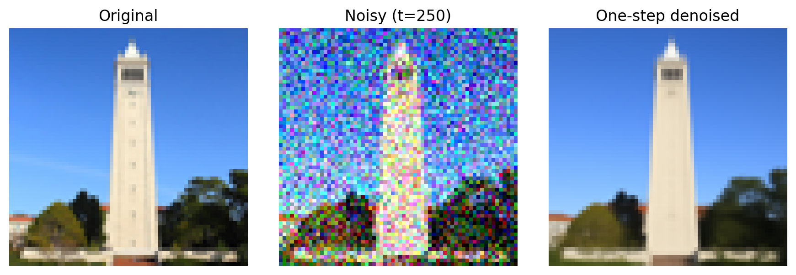
One-Step Denoise at t=250
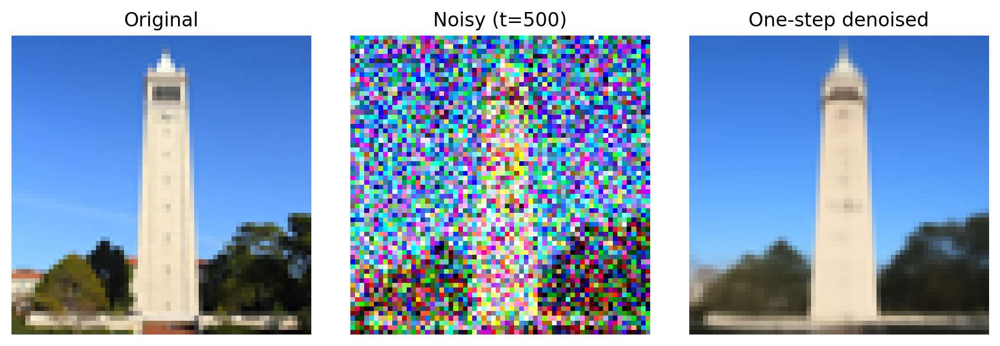
One-Step Denoise at t=500
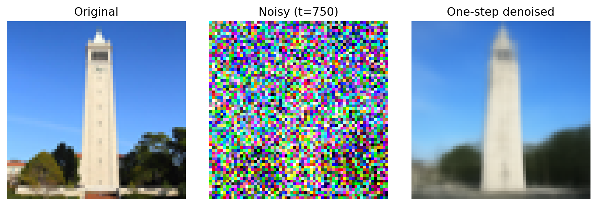
One-Step Denoise at t=750
Instead of trying to denoise in a single step, diffusion models are designed to denoise iteratively. Starting from noisy image x_t, we take small denoising steps to get x_{t'} where t' < t, eventually arriving at x_0. This allows the model to gradually refine its estimate.
I implemented iterative_denoise() using strided timesteps starting at 990 with stride 30,
giving steps [990, 960, 930, ..., 30, 0]. At each step, we predict noise, estimate x_0, then compute
x_{t'} as a linear interpolation between signal and noise with added variance.
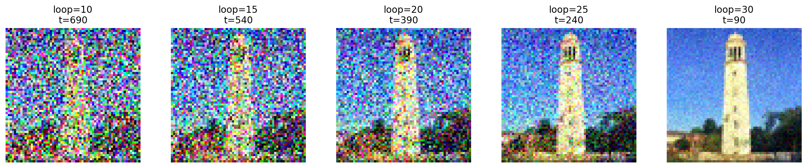
The Campanile at every 5th loop of iterative denoising, showing gradual noise removal. Starting from loop 10 (t=690, very noisy) to loop 30 (t=90, nearly clean).
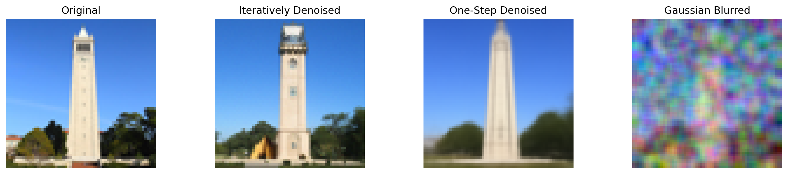
Starting from a noisy image at t=690 (i_start=10), comparing the results of iterative denoising (left), one-step denoising (center), and Gaussian blur (right). Iterative denoising produces the cleanest result.
With the iterative denoising function, we can generate images from scratch by starting with pure Gaussian noise (i_start=0). The model progressively denoises this random noise into a coherent image, guided by the text prompt "a high quality photo".
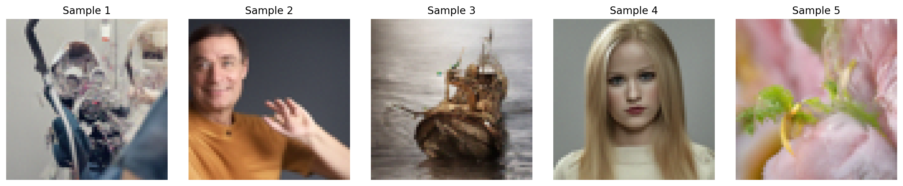
Classifier-Free Guidance (CFG) is a technique to improve image quality by trading off diversity. We compute both conditional (ε_c) and unconditional (ε_u) noise estimates, then extrapolate away from the unconditional prediction.
CFG: ε = ε_u + γ · (ε_c - ε_u)
where γ controls guidance strength (γ = 7 used here)
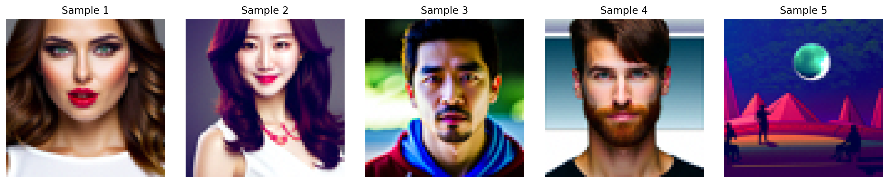
Five images generated with Classifier-Free Guidance (γ = 7). The results are significantly sharper and more coherent than without CFG.
By adding noise to a real image and then denoising, we can make edits while preserving the overall structure. The amount of noise controls the strength of the edit — more noise means more deviation from the original. This technique is known as SDEdit.
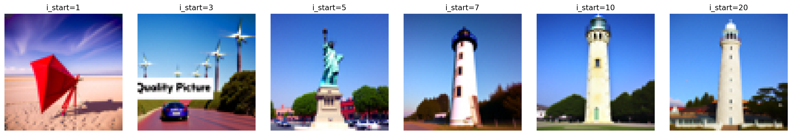
SDEdit applied to the Campanile at i_start = [1, 3, 5, 7, 10, 20]. Lower i_start means starting from more noise, resulting in larger edits. At i_start=20, the image is nearly identical to the original.
SDEdit works particularly well on non-realistic images like sketches or drawings. The model projects these onto the natural image manifold, creating realistic versions of the input.
Original Web Image
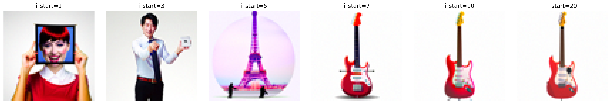
SDEdit Results at Various Noise Levels
Original Hand-Drawn Camera
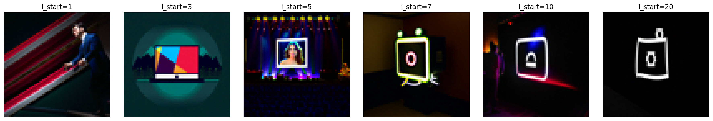
SDEdit Results at Various Noise Levels
Original Hand-Drawn Stick Figure
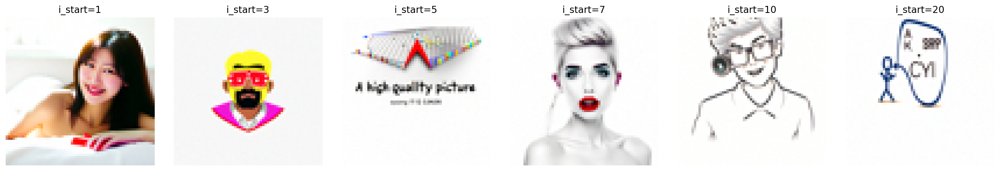
SDEdit Results at Various Noise Levels
Inpainting uses the same diffusion process but constrains regions outside a mask to match the original image at each denoising step. This allows us to fill in missing regions while keeping the rest intact.
Inpainting: x_t = m ⊙ x_t + (1 - m) ⊙ forward(x₀, t)
where m is the binary mask (1 = region to edit)
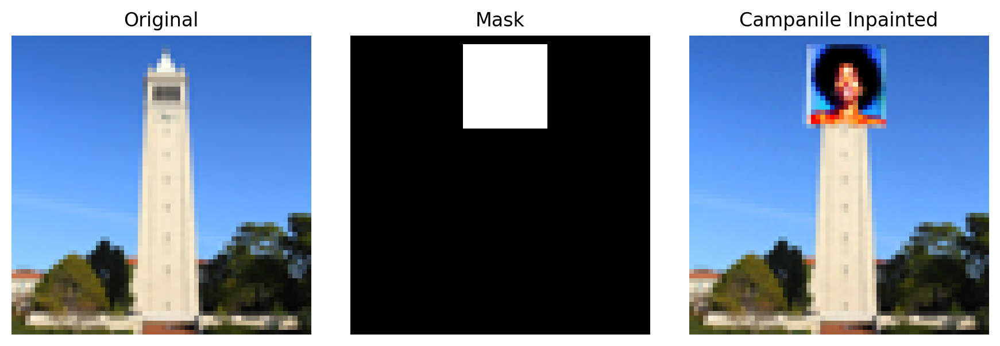
Inpainting the top of the Campanile — the model fills in the masked region with plausible content.
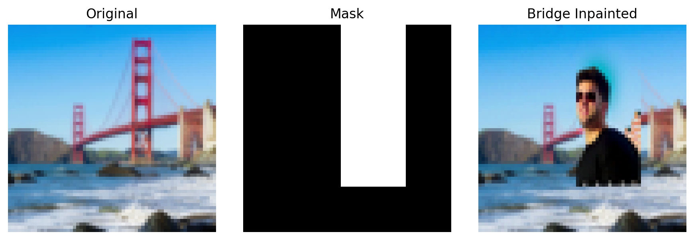
Bridge Inpainting
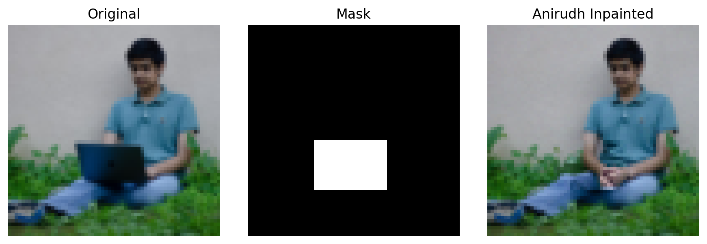
Anirudh Inpainting
By using a specific text prompt instead of the generic "a high quality photo", we can guide the SDEdit process toward a particular style or subject. This combines the structure-preservation of SDEdit with the semantic control of text prompts.
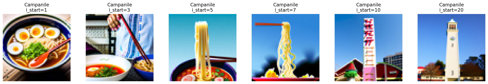
Text-conditional SDEdit on the Campanile with a specific prompt at various noise levels.
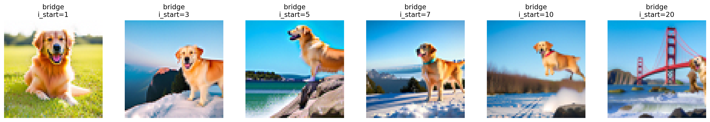
Text-Conditioned Bridge Edits
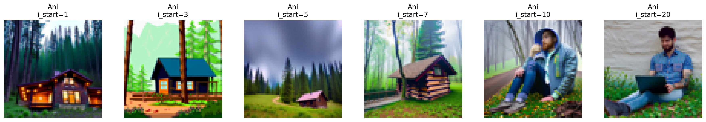
Text-Conditioned Anirudh Edits
Visual anagrams are images that look like one thing when viewed normally but reveal a different image when flipped upside down. We create these by denoising with two prompts simultaneously — one for the upright view and one for the flipped view — and averaging the noise estimates.
Visual Anagram: ε = (ε₁ + flip(UNet(flip(x_t), t, p₂))) / 2
where ε₁ = UNet(x_t, t, p₁) and p₁, p₂ are different prompts
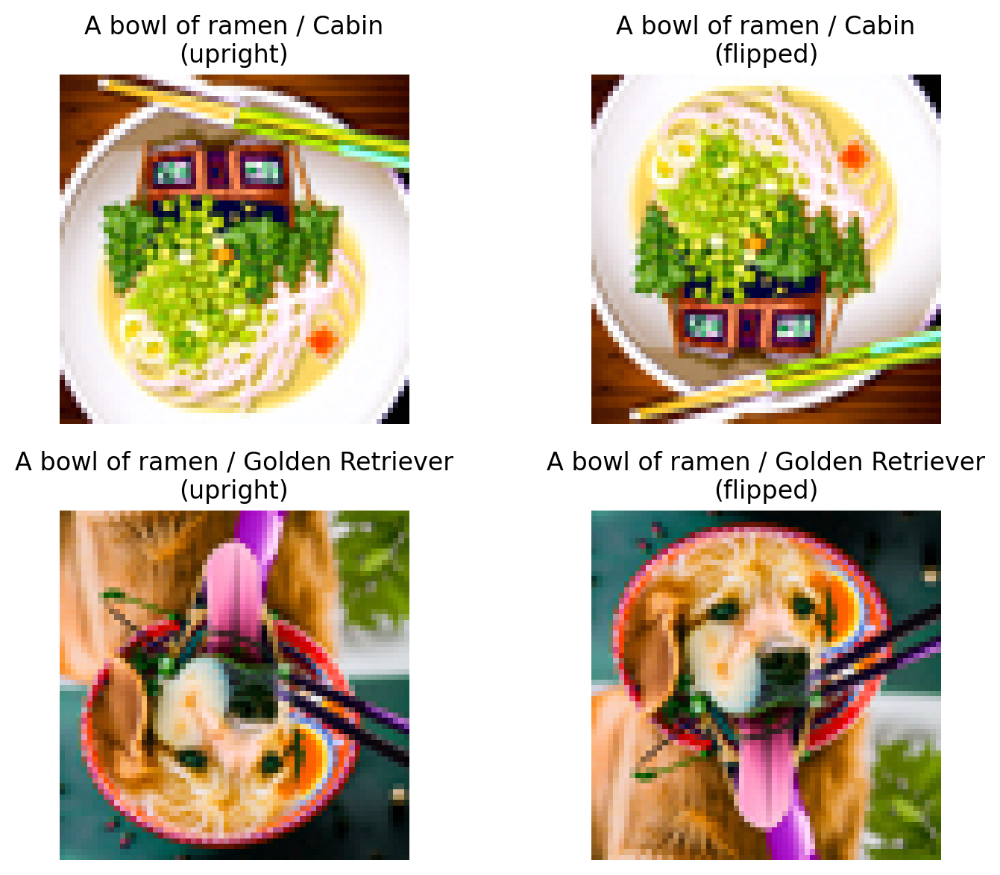
Visual anagrams created using diffusion models. Each image reveals a different subject when flipped upside down — try rotating your screen or tilting your head to see the hidden image!
Building on the hybrid image technique from Project 2, we can create diffusion-based hybrid images using Factorized Diffusion. We combine low frequencies from one noise estimate with high frequencies from another, creating images that appear different at different viewing distances.
Hybrid: ε = f_lowpass(ε₁) + f_highpass(ε₂)
where ε₁, ε₂ are noise estimates from different prompts
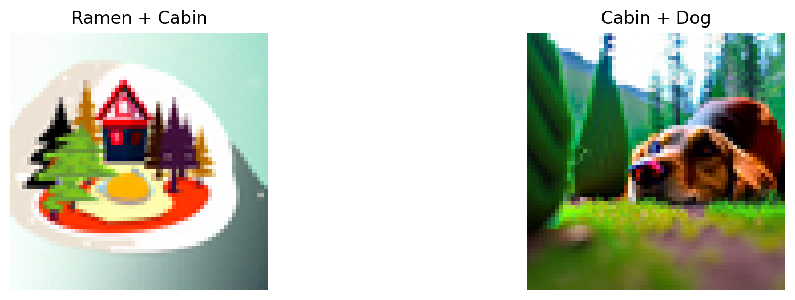
Diffusion-based hybrid images. View up close to see high-frequency content, step back to see low-frequency content. Created using Gaussian blur with kernel size 33 and sigma 2.
In Part B, I trained my own flow matching model on MNIST from scratch. This involved building a UNet architecture, implementing both single-step and iterative denoising, and adding time and class conditioning to enable controlled generation of handwritten digits.
I implemented a UNet architecture for denoising, consisting of downsampling and upsampling blocks with skip connections. The network uses Conv, DownConv, UpConv, Flatten, and Unflatten operations to process images at multiple resolutions while maintaining spatial information through skip connections.
The UNet takes a noisy image as input and outputs a denoised estimate. The architecture uses a hidden dimension D = 128 for the single-step denoiser, with the following key components:
To train the denoiser, I generate training pairs (z, x) where x is a clean MNIST digit and z is a noisy version created by: z = x + σ · ε, where ε ~ N(0, I). Below is a visualization of the noising process at different σ values.
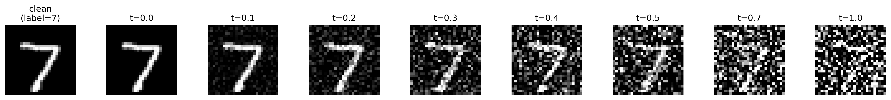
Visualization of the noising process for σ ∈ [0.0, 0.2, 0.4, 0.5, 0.6, 0.8, 1.0]. As σ increases, the digit becomes progressively harder to distinguish.
I trained the UNet to denoise images with σ = 0.5 applied to clean MNIST digits. The training used the following configuration:
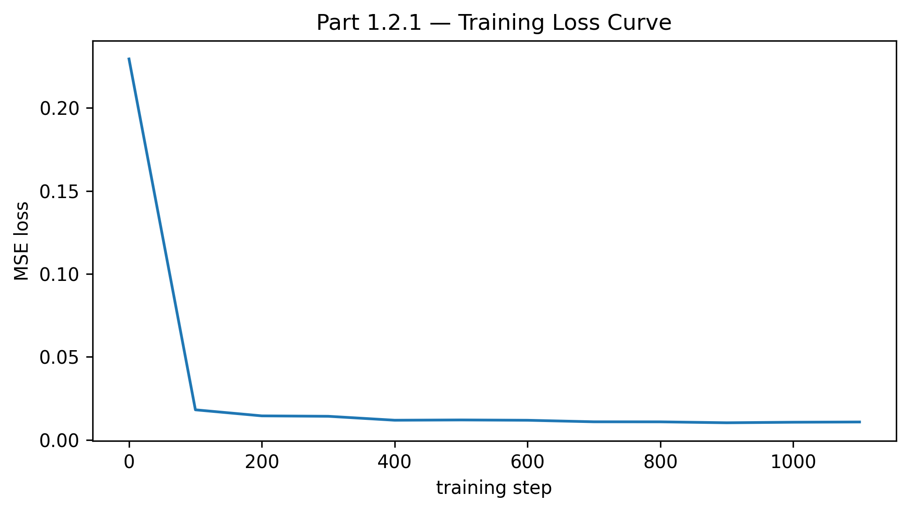
Training loss curve over 5 epochs. The loss decreases steadily, indicating the model is learning to denoise effectively.
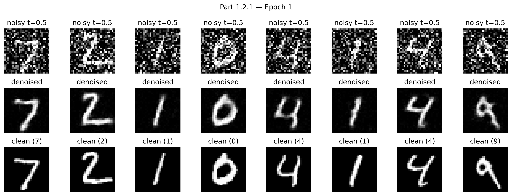
Results After Epoch 1
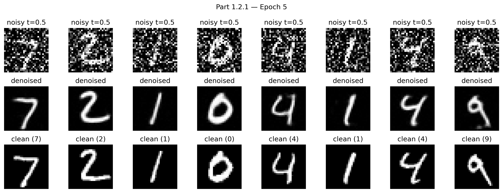
Results After Epoch 5
After just 1 epoch, the denoiser can recover rough digit shapes. By epoch 5, the results are significantly cleaner with well-defined edges and recognizable digits.
The denoiser was trained specifically on σ = 0.5 noise. Here I test how it performs on noise levels it wasn't trained on, to understand its generalization capabilities.
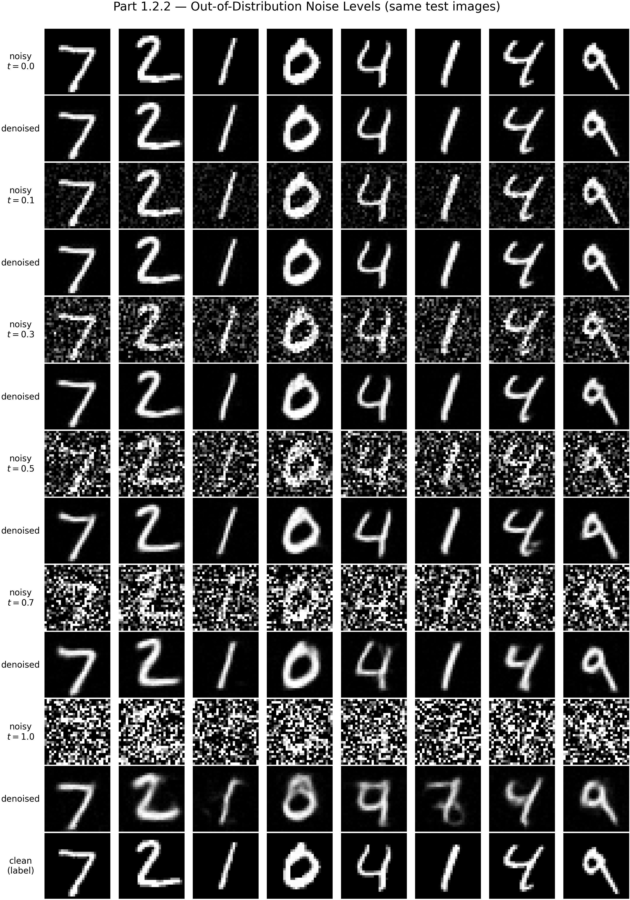
Denoising results on the same image with varying noise levels σ ∈ [0.0, 0.2, 0.4, 0.5, 0.6, 0.8, 1.0]. The model performs best near σ = 0.5 (what it was trained on) and struggles with very high or very low noise levels.
Observation: The denoiser performs well for noise levels close to its training distribution (σ ≈ 0.5) but struggles with extreme values.
To make denoising a generative task, we'd like to denoise pure random Gaussian noise. Instead of starting with a noisy digit, we start with a blank canvas x₁ ~ N(0, I) and try to denoise it to get a clean image x₀.
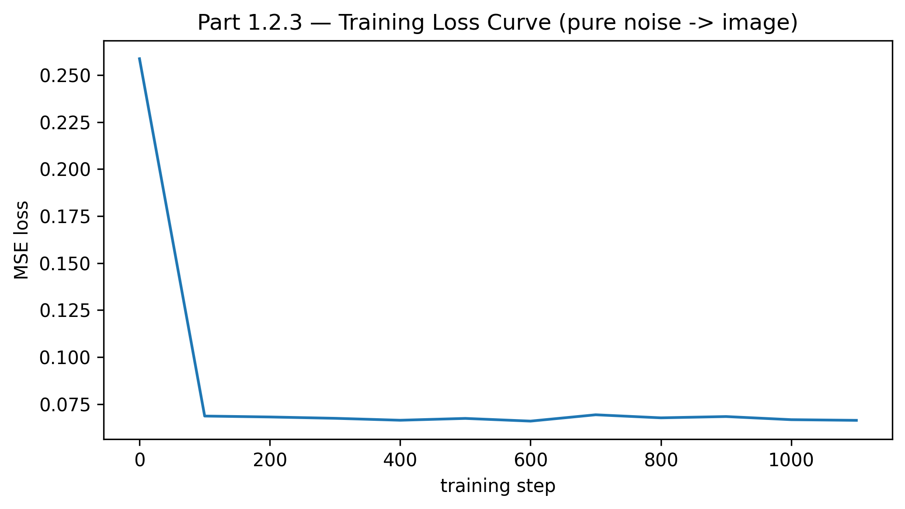
Training loss curve for the denoiser trained on pure noise over 5 epochs.
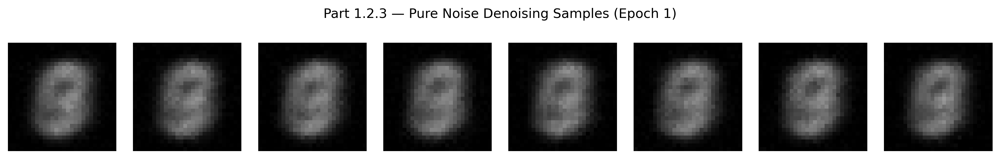
After Epoch 1
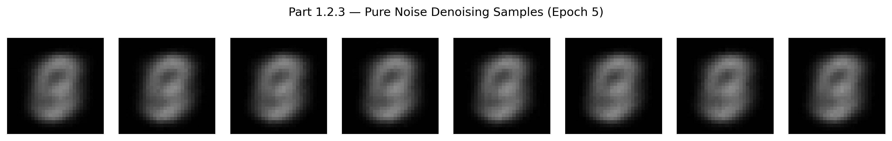
After Epoch 5
Observed Patterns: The outputs tend to look like blurry, averaged versions of digits rather than crisp, distinct numbers. This is because with MSE loss, the model learns to predict the point that minimizes the sum of squared distances to all training examples — essentially the centroid or mean of the training distribution.
Why This Happens: When given pure noise with no signal, the optimal prediction under L2 loss is the average of all possible outputs. Since MNIST contains digits 0-9, the model outputs a blurry superposition of all digits, kind of resembling an "8". This demonstrates why single-step denoising fails for generative tasks — we need iterative denoising (flow matching) to generate distinct samples.
For flow matching, we need to condition the UNet on the timestep t to tell it how noisy the input is. I added FCBlocks (fully-connected blocks) to inject the time conditioning signal into the UNet at strategic locations (after unflatten and after the first upsampling block).
Flow matching interpolation: x_t = (1 - t) · x₁ + t · x₀
where x₁ ~ N(0, I) is noise and x₀ is a clean image
The model learns to predict the flow v = x₀ - x₁, which describes how to move from noise to clean data.
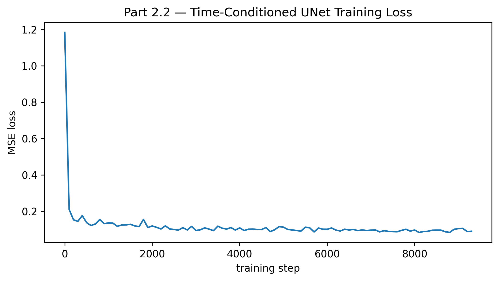
Training loss curve for the time-conditioned UNet. The exponential learning rate scheduler helps the model converge smoothly over the training process.
Using the trained time-conditioned UNet, I can generate new digits by starting from pure noise and iteratively applying the learned flow. The sampling process uses Euler integration with small time steps to gradually transform noise into realistic digits.
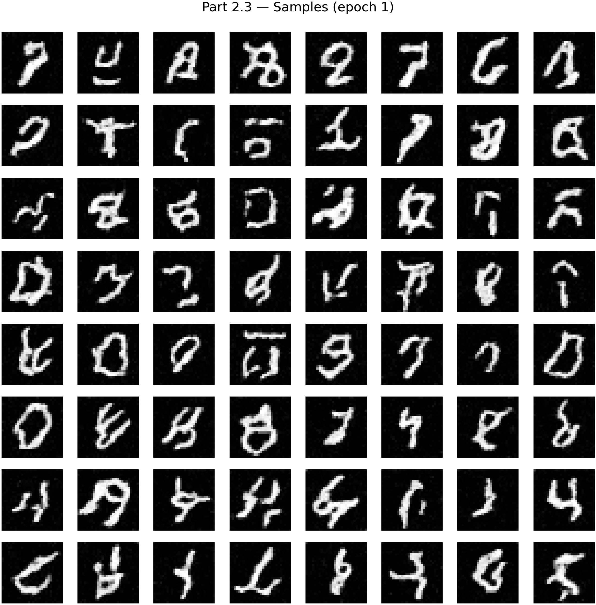
Epoch 1
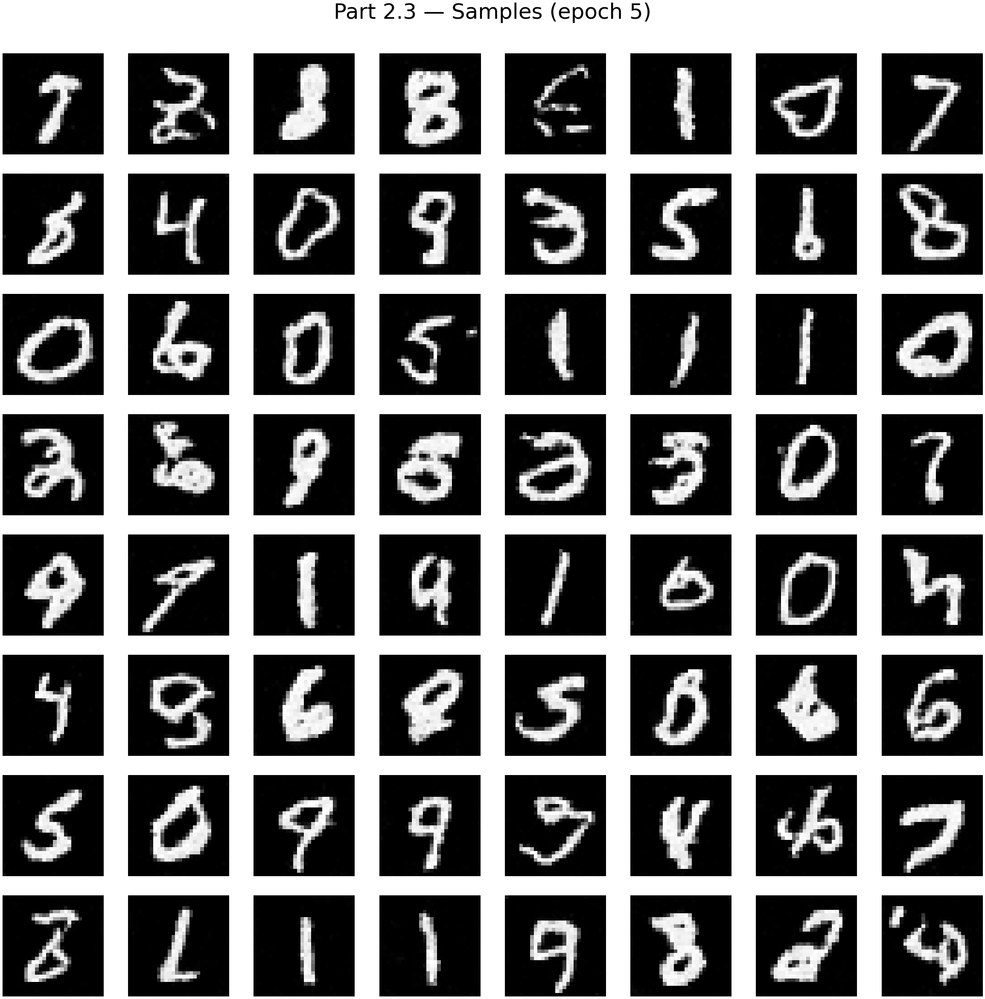
Epoch 5
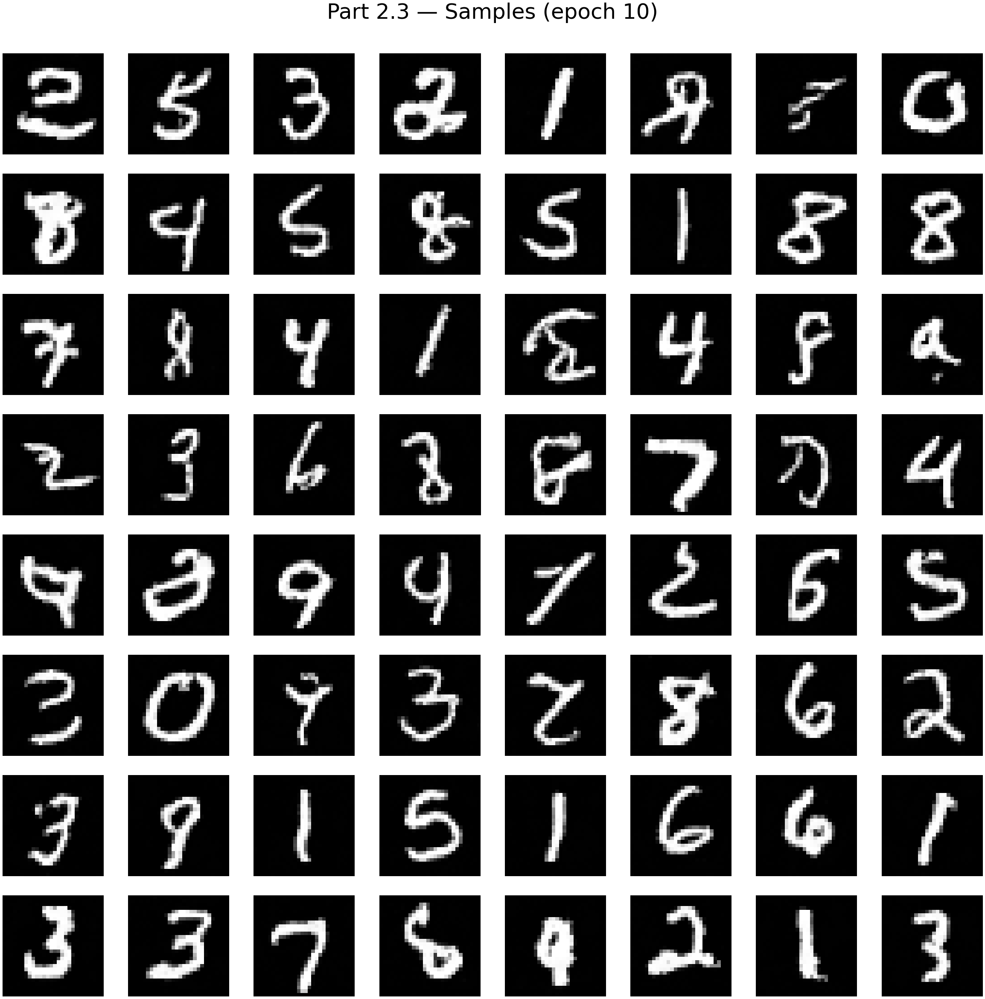
Epoch 10
The quality of generated samples improves with training. By epoch 10, the model produces reasonably legible digits, though without class conditioning, we cannot control which digit is generated.
To gain control over which digit is generated, I added class conditioning to the UNet. The class label (0-9) is encoded as a one-hot vector and injected via additional FCBlocks. During training, 10% of the time the class conditioning is dropped (set to zero) to enable classifier-free guidance during sampling.
Modulated features: unflatten = c₁ · unflatten + t₁
where c₁ = FCBlock(class) and t₁ = FCBlock(time)
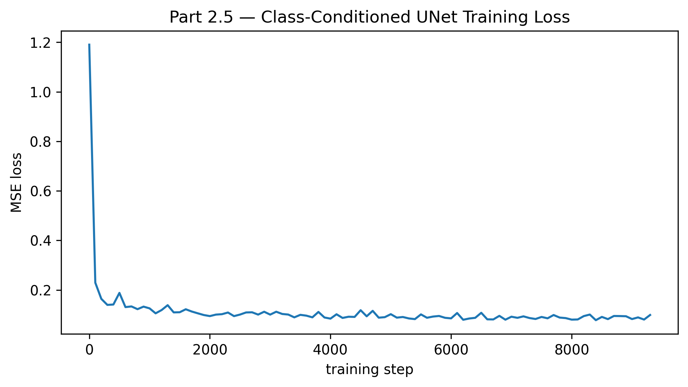
Training loss curve for the class-conditioned UNet. The model converges faster than the time-only version due to the additional conditioning signal.
With the class-conditioned model, I use classifier-free guidance (CFG) with γ = 5 during sampling. This involves computing both conditional and unconditional flow predictions and extrapolating toward the conditional direction.
CFG: v = v_uncond + γ · (v_cond - v_uncond)
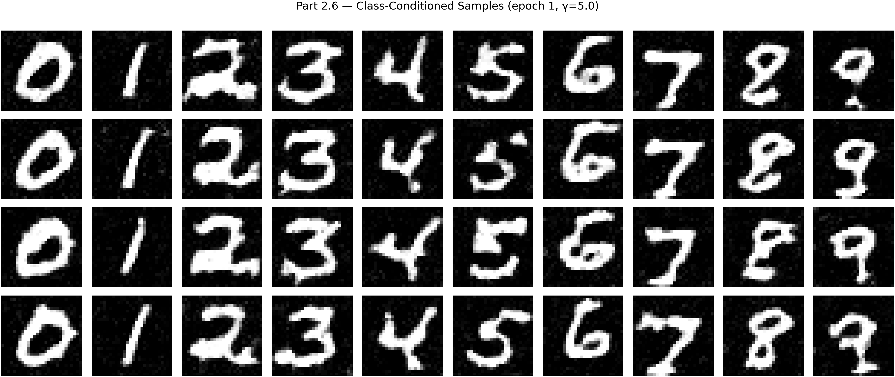
Epoch 1
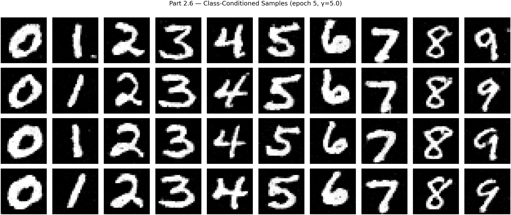
Epoch 5
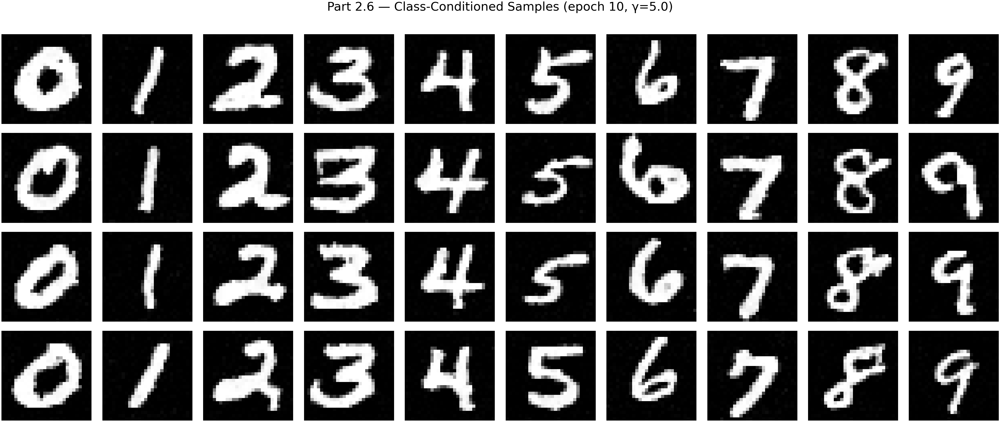
Epoch 10
With class conditioning, I can generate 4 instances of each digit (0-9). The results show clear digit identities by epoch 10, demonstrating that the model has learned to associate class labels with digit appearance. Class conditioning enables faster convergence and more controlled generation.
The exponential learning rate scheduler previously decayed the learning rate by γ = 0.1^(1/10) per epoch. To train without a scheduler, I made the following adjustment:
Training without a scheduler converges slightly more slowly early on, but remains stable and achieves comparable final performance. This demonstrates that careful tuning of a constant learning rate can substitute for explicit scheduling in this task.
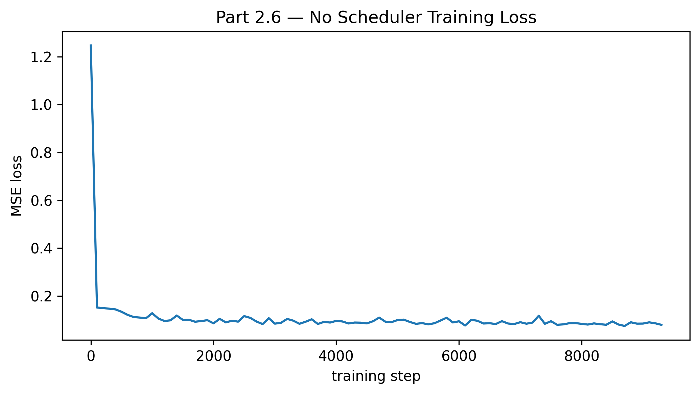
Training loss curve for class-conditioned UNet without the exponential learning rate scheduler.